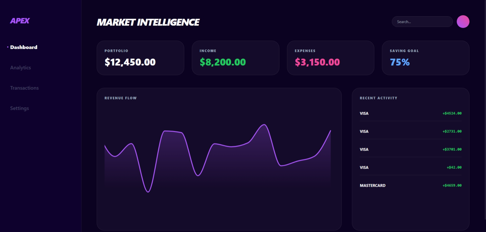
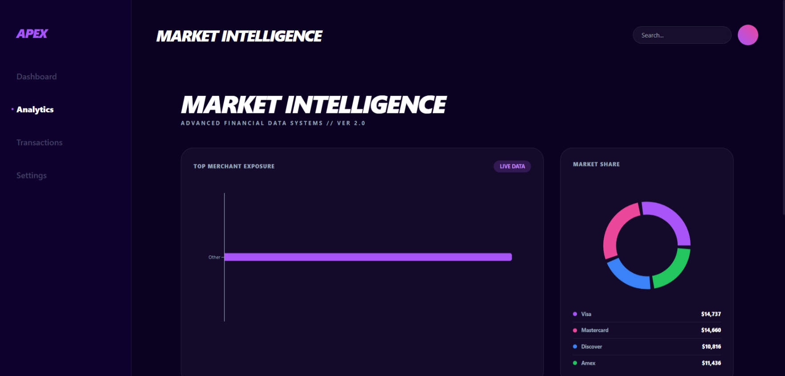
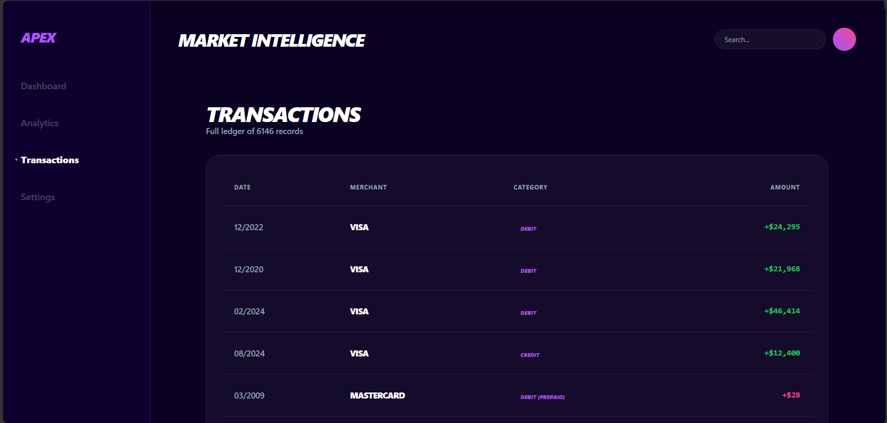
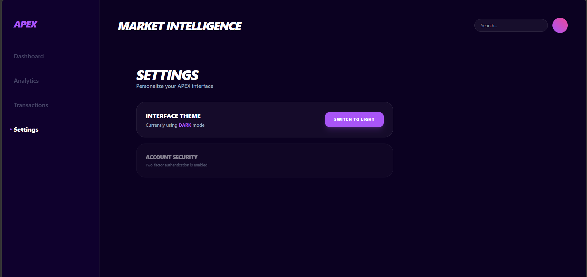
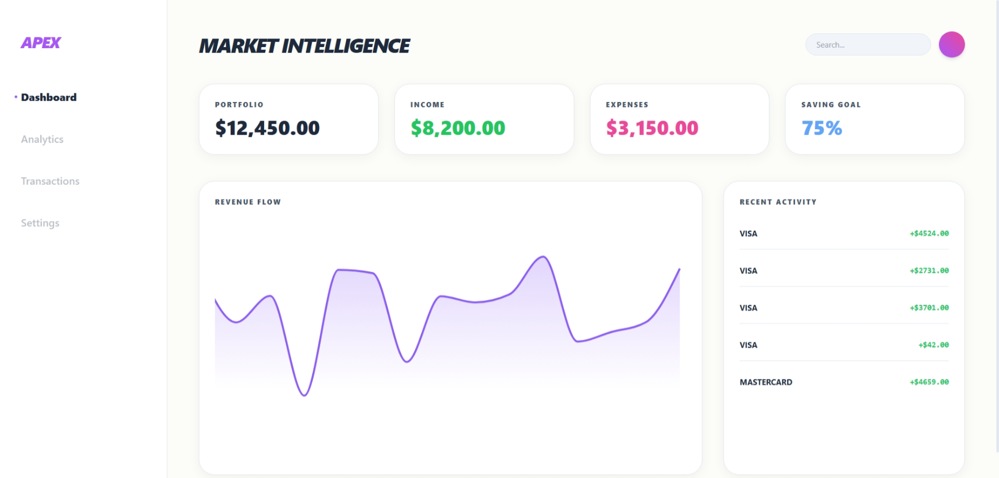
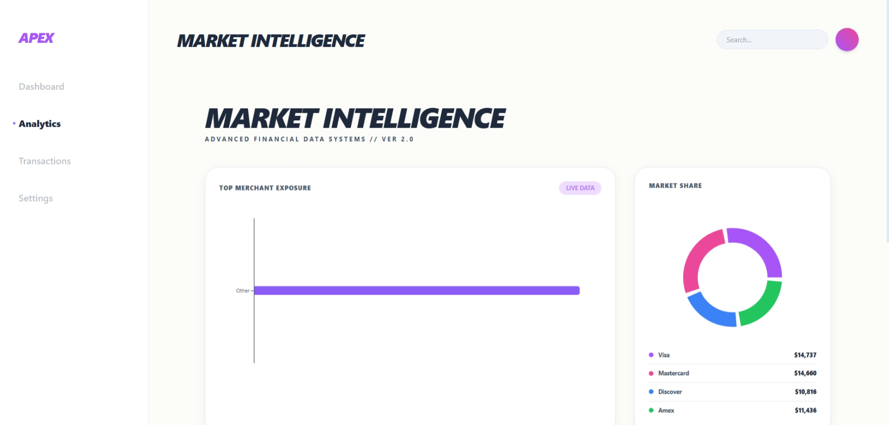
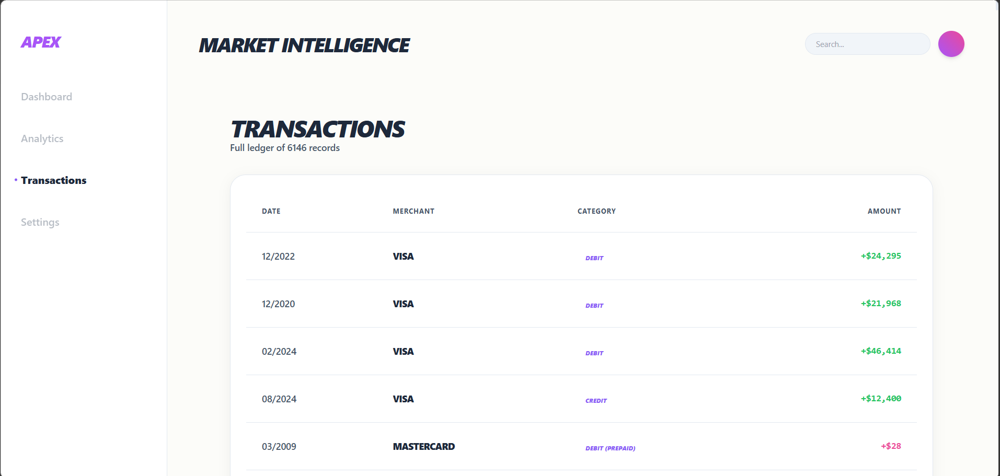
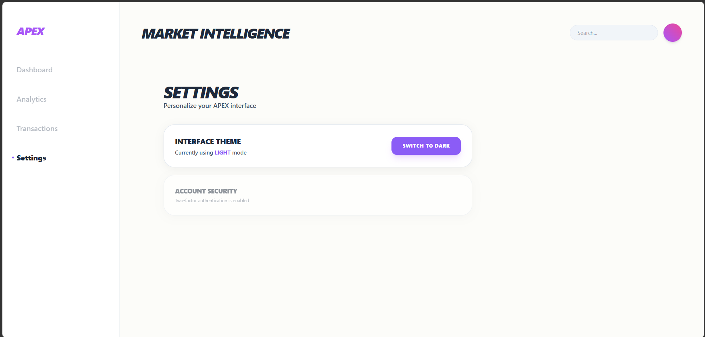

A futuristic finance intelligence dashboard designed to help users track portfolio performance, analyze transaction behavior, visualize market trends, and manage financial decisions through real-time analytics.
Most finance dashboards feel outdated, cluttered, and difficult to interpret. Users often struggle to understand spending patterns, portfolio movement, and financial insights in a visually intuitive way.
I designed APEX as a modern financial intelligence platform focused on clean data visualization, intuitive navigation, live analytics, transaction tracking, theme customization, and responsive mobile experiences.
The primary dashboard gives users an instant overview of portfolio value, income, expenses, savings progress, recent transactions, and revenue movement through interactive visual analytics.

The analytics section helps users understand merchant exposure and market share distribution through visual graphs, helping identify spending concentration and financial patterns.

Users can monitor every financial activity inside a clean transaction management system that organizes merchant data, category classification, transaction date, and real-time amount tracking.

The settings interface allows users to personalize their dashboard experience with theme switching while maintaining account security through a clean and minimal control panel.

APEX supports seamless dark-to-light mode switching, allowing users to choose their preferred interface while preserving the same clean financial data architecture.

All advanced analytics components adapt dynamically between themes while preserving chart readability, merchant visualization, and interactive financial insights.

Transaction monitoring remains consistent across interface themes, giving users easy access to historical financial activity and categorized spending records.

The user settings system instantly updates the entire dashboard appearance in real time, providing a personalized experience while preserving usability and accessibility.

This project helped me improve advanced dashboard design thinking, frontend architecture planning, financial data visualization, responsive design principles, and building premium user experiences for complex data-heavy systems.